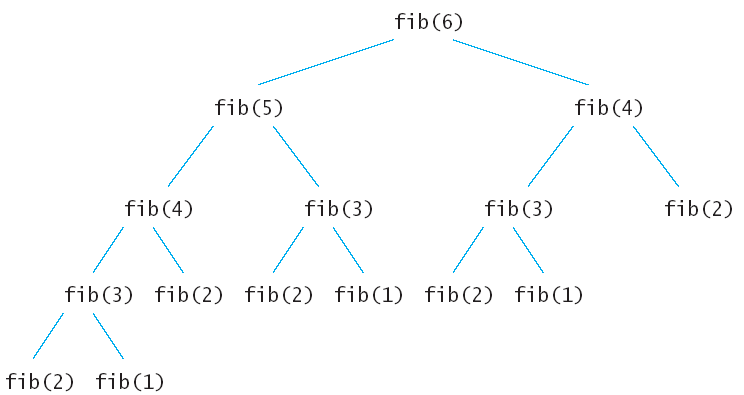

Рекурсия
Пример:
Разгледаме триъгълни форми (числа):
[]
[][]
[][][]
n-тото триъгълно число е лицето на
триъгълник с ширина n (предполагаме, че всяко [] има
лице 1). От картинката - третото триъгълно
число е 6.
- Ако ширината на триъгълника е 1, тогава той
има лице 1.
if (1 == side) return 1;
- За решаване на общия случай, разглеждаме тази
картинка:
[]
[][]
[][][]
[][][][]
- Представяме лицето на
по-големия триъгълник като:
smaller_area + side
- За да намерим по-малкото лице, правим по-малък
триъгълник!
int smaller_area = area(side - 1);
- Как се пресмята лицено на триъгълник с ширина
4:
- Функцията area прави по-малък
триъгълник с ширина 3.
- Тя вика area за този триъгълник.
- Тази
функция прави по-малък триъгълник с ширина 2.
- Тя вика area за
този триъгълник.
- Тази функция прави по-малък
триъгълник с ширина 1.
- Тя вика area за този
триъгълник.
- Тази
функция връща 1 (за триъгълника с ширина 1).
- Функцията
връща smaller_area
+ side
= 1 + 2 = 3.
- Функцията
връща smaller_area
+ side =
3 + 3 = 6.
- Функцията
връща smaller_area
+ side =
6 + 4 = 10.
- Техниката на изразяване на решение на дадена
задача чрез решение за по-малка версия на същата
задача се нарича рекурсия.
- Има две основни изисквания, които да направят
рекурсията успешна:
- Всяко рекурсивно повикване трябва да
опрости изчислението по някакъв начин.
- Трябва да има специален случай, където да
се извършат пряко най-простите изчисления.
- area извиква сама себе си отново с
по-малки и по-малки широчини, достигайки в накрая широчина 1.
int area(int side)
{
if (1 == side) return 1;
int smaller_area =
area(side - 1);
return smaller_area +
side;
}
- Какво се случва,
когато се пресмята лицето на триъгълник с широчина -1?
- Рекурсия наистина не е наистина необходима, за
да се реши тази задача - това може да бъде направено с помощта
на:
- прост цикъл:
double area = 0; int i = 1;
for (; i <= side; i++) area = area + 1;
- формула:
side * (side + 1) / 2
Пример:
Алгоритъм на Евклид за намиране на най-голям общ делител
// gcd.c
#include <stdio.h>
unsigned gcd1(unsigned a, unsigned b)
{ unsigned swap;
while (b > 0) { swap = b; b =
a%b; a = swap; }
return a;
}
unsigned gcd2(unsigned a, unsigned b)
{
return (0 == b) ? a : gcd2(b, a%b);
}
int main()
{
const unsigned a = 1, b = 125;
printf("%d \n", gcd1(a,
b));
printf("%d
\n", gcd1(a, b));
return 0;
}
Връщане от рекурсия и
използване на променливите
Пример:
Рекурсивно отпечатване на цифрите на число
// digit2.c
#include <stdio.h>
void printN(unsigned n)
{
if (n >= 10) printN(n/10);
printf("%d \n",
n%10);
}
int main()
{
unsigned m = 1234;
printN(m);
return 0;
}
Пример:
Пресмятане на n!
// fact.c
#include <stdio.h>
unsigned long fact1(unsigned i)
{
if (1 == i) return 1;
return i * fact1(i - 1);
}
unsigned long fact2(unsigned n)
{
unsigned i = 1;
unsigned long res = 1;
for (; i <= n; ++i)
res *= i;
return res;
}
const unsigned n = 6;
int main()
{
printf("fact1: %u! = %lu \n", n, fact1(n));
printf("fact2: %u! = %lu \n", n, fact2(n));
return 0;
}
** Рекурсия и използване на глобални променливи
Пример:
За дадено естествено число n (n < 9) да се
отпечатат в нарастващ и намаляващ ред числата 10k (0 < k < n).
// print0.c
#include <stdio.h>
const unsigned n = 6;
void printRed1(unsigned k, unsigned long res)
{
printf("%lu \n", res);
if (k < n) printRed1(k + 1, res*10);
printf("%lu \n", res);
}
unsigned k = 0;
void printRed2(unsigned long res)
{
k++;
printf("%lu \n", res);
if (k < n) printRed2(res*10);
printf("%lu \n", res);
}
unsigned long res = 1;
void printRed3()
{
k++;
res *= 10;
printf("%lu \n", res);
if (k < n) printRed3();
printf("%lu \n", res);
res /= 10;
}
int main()
{
printRed1(1,10);
printRed2(10);
k = 0;
printRed3();
return 0;
}
** Ефективност на рекурсията
- Въпреки че рекурсията е мощен метод за сложни
алгоритми, тя може да доведе до програми, които работят лошо.
- Ще анализираме въпроса кога рекурсията е
полезна и кога е неефективна.
- Редица
на Фибоначи се
дефинира по следния начин:
- f1 = 1
- f2 = 1
- fn = fn-1 + fn-2
- Първите 10 члена на тази редица са:
1, 1, 2, 3, 5, 8, 13, 21, 34, 55, . . .
- Точно по дефиницията се пише рекурсивна
функция, пресмятаща n-тото
число на Фибоначи.
int fib(int n)
{
if (n <= 2)
return 1;
else
return fib(n - 1) + fib(n - 2);
}
- Тази функция работи вярно,
но за не много големи n работи доста (изключително) бавно.
Ще изпълним програмата с n между 30 и 50 за
да видим ефекта.
За откриване на проблема ще вмъкнем
трасиращ печат във функцията:
-
int fib(int n)
{
printf("Entering fib: n = %d \n", n);
int f;
if (n <= 2)
f = 1;
else
f = fib(n - 1) + fib(n - 2);
printf("Exiting fib: n = %d return value = %d \n", n, f);
return f;
}
- Резултатът от изпълнението показва защо изчисленията отнемат
толкова време.
Entering fib: n = 6
Entering fib: n = 5
Entering fib: n = 4
Entering fib: n = 3
Entering fib: n = 2
Exiting fib: n = 2 return value = 1
Entering fib: n = 1
Exiting fib: n = 1 return value = 1
Exiting fib: n = 3 return value = 2
Entering fib: n = 2
Exiting fib: n = 2 return value = 1
Exiting fib: n = 4 return value = 3
Entering fib: n = 3
Entering fib: n = 2
Exiting fib: n = 2 return value = 1
Entering fib: n = 1
Exiting fib: n = 1 return value = 1
Exiting fib: n = 3 return value = 2
Exiting fib: n = 5 return value = 5
Entering fib: n = 4
Entering fib: n = 3
Entering fib: n = 2
Exiting fib: n = 2 return value = 1
Entering fib: n = 1
Exiting fib: n = 1 return value = 1
Exiting fib: n = 3 return value = 2
Entering fib: n = 2
Exiting fib: n = 2 return value = 1
Exiting fib: n = 4 return value = 3
Exiting fib: n = 6 return value = 8
- Дърво на извикванията:

- Тъй като fib(4) се вика два пъти,
а fib(3) се вика три пъти
и т.н., то много време се губи за многократни изчисления на
една и съща стойност.
- Когато смятаме ръчно, просто събираме
последните две намерени стойности.
- Този метод може да се програмира с прост цикъл.
int fib3(int n)
{
if (n <= 2) return 1;
int fold = 1, fold2 = 1, fnew;
int i;
for (i = 3; i <= n; i++) {
fnew = fold + fold2;
fold2 = fold;
fold = fnew;
}
return fnew;
}
- Всяко рекурсивно решение може да се замени с
итерационно (рекурсия с цикъл).
- Винаги ли итерационното решение е по-ефективно
(по-бързо) от рекурсивното?
- Често двете решения са еднакво бързи
(триъгълник, пермутации).
- Някои задачи се решават по-лесно с рекурсия
отколкото с итерация.
- Решението на задачата за генериране на
пермутации с цикъл води до по-сложен,
но не по-бърз код.
- Често рекурсивните решения са по-лесни за
разбиране и прилагане правилно, отколкото техните съответни итерационни аналози.